How to use this lesson
§0 · From last time. Lesson 2.2 introduced belief states and showed why an agent that doesn't update beliefs is leaving information on the table. We hand-waved "Bayesian update" via Beta-Bernoulli. Now we make Bayesian reasoning concrete — for tool selection, for inferring the user's intent, and for diagnosing failure.
Business Scenario
Acme Support, Friday afternoon.
A customer ticket: "My order #84291 hasn't arrived and I want my money back."
The agent has to pick a tool. Options:
lookup_order— get the order's current status from Shopifyquery_tracking— get the latest shipping status from ShipStationcheck_payment— verify Stripe charge stateissue_refund— actually refund (requires manager approval > $50)
The agent picks issue_refund immediately. The order turns out to have arrived that morning; the customer hadn't checked their porch. Refund issued, package re-delivered to its owner, ticket reopened, CSAT hit, Ronnie unhappy.
"The agent should have figured out it was probably delivered before refunding. Can it learn priors? Most 'hasn't arrived' tickets we get are actually 'I haven't checked.'"
The answer is yes — and the framework is Bayesian reasoning. Even if the agent doesn't compute posteriors explicitly, the math tells us what the prompt and tool descriptions need to encode.
Bridge to Topic
The agent's failure was prior negligence — acting as if all hypotheses ("not delivered" vs "delivered but unchecked") were equally likely. In reality, Acme's data shows 65% of "hasn't arrived" tickets resolve to "delivered but unchecked." A Bayesian agent uses that prior. A non-Bayesian agent makes Ronnie unhappy.
Mind Map

Mermaid source
mindmap
root((Bayes))
Components
Prior P_H
Likelihood P_E_given_H
Posterior P_H_given_E
Marginal P_E
For agents
Intent inference
Tool selection
Calibration
Common mistakes
Base rate neglect
Anchoring on first obs
Ignoring marginal
Takeaway: Bayes' rule is one equation. The skill is choosing the prior.
Elaboration
4.1 Bayes' rule, in one line
$$ P(H \mid E) = \frac{P(E \mid H) \cdot P(H)}{P(E)} $$
In English: the probability of a hypothesis given evidence equals the prior probability of the hypothesis times the likelihood of the evidence under the hypothesis, divided by the total probability of the evidence.
For agents, this means: given what the user said, what's most likely?
4.2 The Acme refund example, Bayesianised
Hypotheses (mutually exclusive):
- $H_1$: package not delivered (true loss)
- $H_2$: package delivered, customer didn't check
- $H_3$: package stolen after delivery
Priors (from Acme's historical data):
- $P(H_1)$ = 0.25
- $P(H_2)$ = 0.65
- $P(H_3)$ = 0.10
Evidence $E$: "customer said hasn't arrived."
Likelihoods:
- $P(E \mid H_1)$ = 0.95 (genuine loss → almost always complain)
- $P(E \mid H_2)$ = 0.60 (didn't check → complain ~60% of the time)
- $P(E \mid H_3)$ = 0.90 (stolen → complain almost always)
Marginal $P(E) = 0.95 \cdot 0.25 + 0.60 \cdot 0.65 + 0.90 \cdot 0.10 = 0.7175$
Posteriors:
- $P(H_1 \mid E) = (0.95 \cdot 0.25) / 0.7175 = 0.331$
- $P(H_2 \mid E) = (0.60 \cdot 0.65) / 0.7175 = 0.544$
- $P(H_3 \mid E) = (0.90 \cdot 0.10) / 0.7175 = 0.125$
After the complaint, $H_2$ ("delivered, didn't check") is still the most likely explanation, at 54%. The correct first action is query_tracking (test $H_2$). Only if tracking shows no delivery does $H_1$ become more probable and refund justifiable.
4.3 How agents use this without computing it
LLM agents don't run Bayes explicitly. They use it implicitly via:
- Prompt-encoded priors: "Most 'hasn't arrived' tickets resolve as 'delivered but unchecked.' Always verify tracking before issuing a refund." The prior is now in the system prompt.
- Tool descriptions as likelihoods: "query_tracking returns the package's delivery status. If status='delivered', the most likely explanation is the customer didn't check." Likelihood encoded in tool description.
- Few-shot examples: showing 2–3 examples of correct prior+update reasoning teaches the model the pattern.
The math doesn't run, but the behaviour matches what Bayes would prescribe. This is the standard way Bayesian reasoning is "implemented" in LLM agents.
4.4 Common failure modes
- Base-rate neglect: agent ignores priors and treats every claim as equally likely. Symptom: agent jumps to action without verifying. Fix: include base rates in the prompt.
- Anchoring: agent over-weights the first observation. Symptom: agent commits early and ignores later evidence. Fix: ask the model to explicitly enumerate hypotheses before reasoning.
- Marginal neglect: agent computes likelihood × prior but forgets to normalise. Symptom: agent reports a "very confident" answer that's actually 0.3/0.5/0.2. Fix: ask for top-3 with probabilities, not top-1.
Problem Statement
Tom's literature-triage agent at Helix is being asked: "Find papers on Alzheimer's that mention donepezil + memantine combination therapy." Three classes of papers:
- $C_1$ — direct mention of the combination (target)
- $C_2$ — mentions one drug, suggests combination experimentally
- $C_3$ — irrelevant
Tom has data on his collection: $P(C_1) = 0.02$, $P(C_2) = 0.08$, $P(C_3) = 0.90$.
An abstract mentions donepezil. The likelihood model is:
- $P(\text{abstract mentions donepezil} \mid C_1) = 0.95$
- $P(\text{abstract mentions donepezil} \mid C_2) = 0.65$
- $P(\text{abstract mentions donepezil} \mid C_3) = 0.05$
- Compute the posterior over $C_1, C_2, C_3$.
- Should the agent read the full paper or pass it through? Use a "read iff $P(C_1 \cup C_2 | E) > 0.30$" rule.
- Write the prompt instructions that would make an LLM agent behave Bayesianly without running explicit Bayes.
Solution Walkthrough
Posterior
$P(E) = 0.95 \cdot 0.02 + 0.65 \cdot 0.08 + 0.05 \cdot 0.90 = 0.019 + 0.052 + 0.045 = 0.116$
$P(C_1 \mid E) = 0.019 / 0.116 = 0.164$ $P(C_2 \mid E) = 0.052 / 0.116 = 0.448$ $P(C_3 \mid E) = 0.045 / 0.116 = 0.388$
$P(C_1 \cup C_2 \mid E) = 0.612 > 0.30$. Read the full paper.
This is the value of the Bayesian frame: a naïve "the paper mentions donepezil so it's about donepezil" would skip ~$P(C_3 \mid E) = 39%$ false positives and miss $\sim 50%$ of $C_2$ papers (since most $C_2$ papers don't mention combination explicitly in the abstract).
LLM-agent prompt instructions (Bayesian without Bayes)
You are screening abstracts for combination therapy mentions.
Base rates in our corpus:
- 2% of papers are directly about the target combination
- 8% mention one drug and suggest combinations experimentally
- 90% are unrelated
When you see an abstract mentioning ONE of the target drugs:
- Don't conclude it's about the combination (only 16% are).
- Don't conclude it's irrelevant (39% are unrelated).
- Read the full paper if there's any indication of combination work
in the abstract.
When you see the abstract mention BOTH drugs:
- Almost certainly relevant. Read the full paper.
When the abstract mentions NEITHER:
- Almost certainly irrelevant. Skip.
The base rates and conditional rules encode the prior + likelihoods. The model now behaves Bayesianly on this task without ever computing a posterior.
Mathematical Foundation
7.1 Log-odds form (the friendly Bayes)
$$ \log \frac{P(H_1 \mid E)}{P(H_2 \mid E)} = \log \frac{P(E \mid H_1)}{P(E \mid H_2)} + \log \frac{P(H_1)}{P(H_2)} $$
In English: log-posterior-odds = log-likelihood-ratio + log-prior-odds.
This is easier to reason with than the multiplicative form. Each piece of evidence contributes additively to the log-odds. Useful for multi-evidence problems.
7.2 Bayesian model averaging
When the agent has multiple ways to interpret evidence, the Bayesian-correct answer is a weighted average over interpretations:
$$ \hat{y} = \sum_h P(h \mid E) \cdot \hat{y}_h $$
In practice, LLM agents usually commit to the maximum-posterior hypothesis (MAP). For high-stakes decisions, ask the model to enumerate top-3 hypotheses with probabilities and let downstream logic choose how to combine.
7.3 Calibration
A perfectly Bayesian agent is calibrated: when it says "80% confident," it's right 80% of the time. LLM agents are miscalibrated by default — typically over-confident on rare classes (because pretraining over-represents confident assertions).
Calibration can be measured: ask the model for confidence on N test items, bin by confidence, plot actual accuracy vs stated confidence. The reliability diagram is your calibration. Module 8 covers this in detail.
Technical Deep-Dive
8.1 Where to put the priors
Three places to encode Bayesian priors for an LLM agent:
- System prompt — global priors that apply to every task. ("Most refund tickets are delivery confusion, not loss.")
- Tool descriptions — likelihoods specific to a tool. ("
query_trackingis 95% reliable for confirming delivery.") - Few-shot examples — example reasoning chains that demonstrate Bayesian behaviour.
Use all three. Prompt priors set the floor; tool descriptions add specificity; examples teach the pattern of reasoning.
8.2 When Bayesian priors hurt
Priors can be wrong. A common failure: encoding stale base rates that no longer apply.
For Acme: if you encoded "65% of 'hasn't arrived' tickets are delivered-but-unchecked" but a new shipping carrier has 25% loss rate, the prior is now actively harmful. You need to refresh priors against recent data, not bake them in once.
In production: store priors as a versioned configuration, refresh quarterly, and A/B test prompt versions against rolling base rates.
8.3 Eliciting beliefs from the model
For diagnostic purposes, you can ask the model directly:
"Before taking any action, list the top 3 hypotheses for what's going on and estimate the probability of each. Sum to 1."
This forces the model to enumerate (counteracts anchoring) and quantify (counteracts vague confidence). The elicited beliefs are then inspectable and can be logged for calibration analysis.
8.4 The "verify before commit" pattern
The general pattern from §1's failure:
For any action with cost > threshold or reversibility = "no":
1. Enumerate hypotheses about why the action is being taken.
2. Identify the cheapest verification that would distinguish them.
3. Take the verification first.
4. Commit only after verification narrows the posterior.
This is Bayesian sequential decision-making in production-ready prose. Encode it once in the system prompt; agents will follow it across thousands of tasks.
What This Unlocks
- Lesson 2.4 quantifies "the cheapest verification" via information theory — exactly which tool call has the highest expected information gain.
- Module 5 uses Bayesian priors to weight retrieval results — not all retrieved documents are equally trustworthy.
- Module 8 uses calibration as a core eval metric.
- Module 10 uses base-rate-aware prompting as a defence against social-engineering prompt injection ("most messages asking for credentials are attacks; verify the requester").